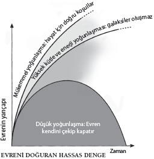
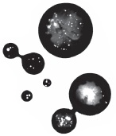

Evrenimizin sınırları ve
paralel evren arayışları
Sizi siz yapanın ne olduğunu ya da hayatınızın benzersiz, önceden belirlenmiş bir amacı ve yolu olup olmadığını merak ediyorsanız fiziğin cevaplayabileceği düşünülen en büyük sorulardan birini sormuşsunuz demektir.
Yazarların hep oynadığı bir sorudur bu. Bizim dünyamızdan ulaşılabilen başka dünyaların hikâyelerine edebiyatta sık rastlanır. Bu fikir bilim kurgunun başlıca fikirlerinden biridir, ama çocuklar için yazılmış kitapların da ana temalarından birini oluşturur: C.S. Lewis’ın kaleme aldığı dizinin kurgusal Narnia âlemi, Lewis Carroll’ın klasik hikayesi Alice Harikalar Diyarında gibi.
Fakat bu kitaplar, kendi dünyalarındaki zamanı yitirmeden paralel bir dünyaya ulaşan kahramanlarının benzersiz olduğunu varsayar. Bilincimizin sınırlı olduğuna hiç kuşku yoktur; bize yalnızca bir tek “ben” olduğunu söyler: Herhangi bir anda ancak bir tek yerde olabilirim. Fakat Zen benzeri bilinç sorununu ve “Ben”in ne olduğunu bir kenara bırakırsak başlıktaki soruya cevabımız neredeyse kesinlikle dosdoğru bir hayır olacaktır: Hayır, benzersiz değilsiniz. Gelgelelim bu cevaba varırken izlediğimiz yol dosdoğru olmaktan uzaktır.
Neden benzersiz olmayabileceğinizin üç sebebi vardır, bunların hepsi de evreni anlama biçimimizin temelinde yer alır. Biri evrenin fiziksel genişliğiyle, bir ucu olup olmadığı sorusuyla ilgilidir. İkincisi Einstein’ın “hayatımın en büyük hatası” dediği şeyle ilgilidir ve yaratılışın ilk anlarından çıkıp gelerek sonsuz geleceğimizle ilgili sorular yöneltir. Üçüncüsü ise kuantum dünyasının temel doğasını araştırır. “Ben eşsiz miyim?” sorusu başta kulağa aptalca gelse de artık öyle gelmemektedir. Bir yerlerde gerçekten başka bir siz olup olmadığı meselesi aslında evren hakkında ne kadar bildiğimizi sormakla aynı şeydir.
Buna cevap vermenin en basit yolu, evrenin boyutlarını incelemektir. Burada fizikçilerin aralarından seçim yapabileceği üç olasılık bulunmaktadır. Muhtemelen evren genişliği bakımından sonsuzdur. Ya da sonlu olabilir, fakat bir tenis topunun üzerindeki bir karınca gibi, bizler kenarına hiçbir zaman ulaşamayabiliriz. Üçüncü seçenek de evrenin sonlu olmasıdır, ama öyle bir geometrisi vardır ki bir kenarından düşebilirsiniz.
Evren sonsuzsa benzersiz olmadığınızı düşünmek için iyi bir sebebiniz var demektir. Evren sonsuz sayıda dünya içerecek olsa da, bu yüzden Dünya benzeri hayatın olacağı sonsuz sayıda dünya içerecek olsa da öyle görünüyor ki bir molekül kümesinin bir canlı ortaya çıkarabilecek şekilde yapılandırılmasının da o kadar çok yolu olacaktır. Bu da bir yerlerde sizin bir karbon –şaka olsun diye diyorum– kopyanızın bulunduğu anlamına gelebilir.
Elbette ki bu iddiaya hemen karşı koyacaksınız, bütün molekül yapıları birbirine benzer olsa bile bunların bir siz daha yapmayacağını söyleyeceksiniz. Hatıralar ve deneyimler meselesi var bir de; peki ama bunlar bir tarafa bırakıldığında, siz tam olarak nesiniz? Kendimizin önüne geçiyoruz, bu aşamada bunun yüzleşmemiz gereken bir soru olup olmadığını bilmiyoruz. Şimdi elimizde, evrenin sonlu mu yoksa sonsuz mu olduğu sorusu var.
Sonsuzluk ve Ötesi
Bilim insanları ve filozoflar uzun zaman boyunca evrenin boyutları üzerine düşünmüşlerdir; fakat tarihin büyük bölümü boyunca, evrenin sonlu olduğu düşünülmüştür. MS 140 civarında, Batlamyus evreni dünyayı merkez alan sonlu bir küre olarak düşünmüştü. Fakat 1576’ya gelindiğinde biri çıkıp aksini iddia etti. İngiliz gökbilimci Thomas Digges bizim güneşimize benzer yıldızlarla dolu sonsuz bir evren fikrini ortaya attı. Digges İtalyan filozof Giordano Bruno’dan daha şanslıydı. Bruno birkaç yıl sonra benzer bir iddiada bulunduğunda, Roma Katolik Kilisesi yetkililerinin gazabını üzerine çekti ve bu yüzden yakılarak cezalandırıldı.
Evrenin genişliği konusunda hâlâ bundan daha bilgili değiliz. Kozmik mikrodalga arkaplan ışınımına, Büyük Patlama’nın yankılarına dair gözlemler evrenin sonlu olabileceğine işaret ediyormuş gibi görünmektedir. Bu ışınım tayfındaki anormalliklere dair en beğenilen açıklamalar kozmosun büyüklüğünün bir sınırı olabileceğini düşündürmektedir, fakat buna rakip birçok açıklama vardır. Dolayısıyla evrenin sonsuz olup olmadığına emin olmadığımızdan, uzaklardaki bir dünyada bir başka siz olup olmadığını söyleyemeyiz. Belki de elimizdeki ikinci olasılık, Einstein’ın en büyük hatasıyla ilgili olan olasılık meseleyi biraz daha aydınlatabilir.
Evrenler Bolluğu
Bu olasılık, “sonsuz genişleme teorisi” diye bilinen şeyle başlar; bu teoriye göre peş peşe patlak veren, sonra birbirinden doğan evrenler bulunmaktadır. Kulağa tuhaf gelse de bunun doğal, devam etmekte olan bir senaryo olduğuna dair bir hayli kanıt bulunmaktadır. Bu fikir 1970’li yıllarda fiziğe musallat olan bir anormalliğin keşfiyle birlikte doğmuştur. Kozmik mikrodalga arkaplan ışınımının 1963’te keşfedilmesinden bir on yıl sonra, pek az kişinin evrenin başlangıcının bir “Büyük Patlama”ya dayandığına dair kuşkuları vardı. “Büyük Patlama” terimi ilk kez Fred Hoyle tarafından ortaya atılmıştır; Hoyle bu fikre en sert eleştirileri getirenlerden biri olmuştu, bu terimle evrenin patlayarak varlık bulduğu fikrine karşı çıkıyordu; fakat kanıtlar iyiydi, isim tutmuştu ve belki de en önemlisi yaratılışla ilgili baskın dini görüşlere hoş bir biçimde uyuyordu. Fakat bir sorun vardı. Gördüğümüz evren, tek başına bir büyük patlamayla açıklanamazdı.
Öncelikle, görelilik bize enerji ve maddenin varlığında uzay ve zamanın büküldüğünü söyler (bkz. Elma Neden Düşer?).

Bunun evrenimiz üzerinde derin bir etkisi olacaktır; görelilik evrenin bütün geometrisini değiştirecektir. Bu geometri değişikliğinin yol açtığı sonuçlar ne kadar madde ve enerji bulunduğuna bağlıdır. Yüksek yoğunluklarda uzay ve zaman felakete yol açacak bir biçimde bükülebilir, evreni kapatabilir. Düşük yoğunluklarda Büyük Patlama’nın genişletici gücü evrenin ilk zamanlardaki şekline hükmetmiş, içindeki her şeyi yıldızlar ve galaksiler (ve üzerinde yaşanabilir gezegenler) oluşturamayacak kadar birbirinden uzağa fırlatmış olsa gerek. Gelgelelim evrenimiz, nihayetinde bizlerin var olmasını mümkün kılacak “düz” bir geometriyle kurulmuştur. Soru şudur: Evrenin neden bu kadar mükemmel olması gerekiyor?
Kozmologların karşı karşıya olduğu tek zor soru bu “düzlük sorunu” değildir. Bir de “ufuk sorunu” vardır. Bu sorun evrenin karşıt uçlarındaki ısının aynıymış gibi görünmesinden kaynaklanmaktadır. Bunun böyle olabilmesinin tek yolu, ısının evrende eşit bir biçimde dağılmış olmasıdır; fakat evrenin, bunun gerçekleşemeyeceği kadar büyük olduğunu biliyoruz. Isı fotonlar tarafından taşınır, fotonlar radyasyon (ışınım) parçacıklarıdır. Fotonlar ışık hızıyla yol alsalar bile, evrenin tamamında yol almalarına, ısıyı bir uçtan diğerine taşımalarına, böylece kozmosta sıcaklığın yoğunlaştığı noktalar bulunmamasına yetecek zaman olmamıştır.
Kurtarıcı Genişleme
1980’lerin başında fizikçiler bu iki sorunu tek bir darbede çözdüler. Bu çözüme “genişleme” dendi; Büyük Patlama’dan hemen sonra evrenin çok hızlı bir genişleme sürecine girdiği ileri sürülüyordu. Kimse bunun neden ve nasıl olabileceğini bilmiyor olsa da bir genişleme süreci, kozmologların Büyük Patlama’yla ilgili olarak karşı karşıya oldukları sorunlara verilmiş en iyi cevap olmayı sürdürmekte; ısının dağılımını ve evrenin düzlüğünü açıklamaktadır. Aynı zamanda ikinci bir size giden bir yol açmaktadır.
İnsanlar neredeyse otuz yıldır olası genişleme mekanizmaları hakkında fikir yürütüyor. En beğenilen fikirler genişlemenin hiç bitmeyen bir hikâye olduğunu ileri sürüyor. Uzay-zamanın küçücük bir parçası havaya uçarsa bu durum tekrar gerçekleşebilir. Bu kaotik genişleme teorilerine göre, boş uzaya içkin olan dalgalanan enerji, bizim uzay ve zamanımız içinde herhangi bir yerden yepyeni koca bir evrenin şişip genişlemesine yol açabilir. Willy Wonka’nın çikolata fabrikasını andıran bir süreçle, her zaman eski evrenlerden yeni evrenler şişip doğmaktadır. Nihayetinde her bir evrenin ağzı kopacak, onu kendisini doğuran evrenden ebediyen ayıracaktır.
Fantastikmiş gibi görünse de sicim kuramcılarının kendi sorunlar dizisini çözecek bir fikir gibi görüp sarılmalarıyla birlikte bu senaryo büyük bir yükseliş yaşadı. Sicim kuramı Einstein’ın görelilik kuramıyla kuantum dünyasının tuhaflığını birleştirerek “nihai” bir fizik kuramı yaratma yönünde bir girişimdir. Kuramın temel fikri bütün maddenin titreşen küçük enerji düğümlerinden oluşmuş olduğudur; titreşimlerin frekansı nasıl bir maddenin ortaya çıkacağını belirler. Sicim kuramcıları bunun ne tür bir evren yaratacağını hesaplamaya çalıştıklarında, daha ziyade bizimki gibi görünen ve davranan bir evrenle karşılaşacaklarını umuyorlardı.
Öyle olmadı. Ne kadar çabaladılarsa da içinde yaşadığımız evrene benzer tek bir sicim evreni yaratamadılar. Aksine, her biri farklı niteliklere sahip binlerce evren yarattılar. 1998’de evrenin genişlemesinin hız kazandığının keşfedilmesiyle birlikte bu sorun ağırlaştı. Evrenin hâlâ genişliyor olmasını –Büyük Patlama’nın etkisi hâlâ güçlüdür– bekliyor olsak da evrendeki her şeyin kütleçekim çekimi genişlemenin aleyhine işlediğinden, genişlemenin yavaşlıyor olması gerekir. Genişleme hızlanıyorsa bilinmeyen bir güç iş başında demektir.
Fizikçilerin bu hızlanmayla ilişkilendirilen enerjinin yaklaşık olarak kozmostaki toplam kütle ve enerjinin yüzde 70’ini oluşturuyor olduğunu ortaya çıkarması uzun sürmemiştir. Adına ne derseniz deyin –fizikçiler buna karanlık enerji der– bu enerji hakkında bilinmeyen çok fazla şey vardır.
Einstein’ın Hatası
Karanlık enerji gizemine verilecek en iyi cevap, Einstein’ın evreni tanımlayan ilk denklemlerine eklediği matematik bir terimle ilişkilidir. Einstein bir Büyük Patlama hakkında hiçbir şey bilmiyordu; evrenin genişliyor değil, statik olması gerektiğini düşünüyordu. Maalesef denklemleri dengesiz bir evren ortaya çıkardı; bu yüzden de düzgün, statik bir evren yaratmak için “kozmolojik sabit” olarak bilinen terimi denklemlerine dahil etti. Büyük Patlama’nın keşfinden sonra da bunun “en büyük hatası” olduğunu söyledi.
Gelgelelim karanlık enerjinin keşfinin ardından kozmolojik sabit yeniden moda olmuştur. Bu terimin evrenin neden hiç olmadığı kadar hızlı bir biçimde genişlediğini açıklayabileceği düşünülüyordu. Fakat terim bunu açıklayamıyordu; hem de dikkat çekici bir biçimde açıklayamıyordu. Bu sabit için hesaplanan değer ölçülen değerin yaklaşık 10120 katı olarak çıkıyordu. Yani arkasında 120 tane sıfır olan 1: Fizikçiler bile bu değeri bilim tarihinde kuram ile deney arasındaki en yüz kızartıcı uyumsuzluk olarak nitelemişti.
Fakat sicim kuramının buna bir cevabı vardır: Bir evrenin neden olduğu gibi olduğunu anlamaya çalışmayın; farklı dünyaların çoğulluğunun keyfini sürün yeter. Kaotik genişleme bu dünyaların hepsinin de var olduğunu söyler, sicim kuramı da. Evet, kozmolojik sabitin açıklanamayacak kadar küçük olduğu bir evrende yaşıyoruz; peki ama neden doğadaki sabitlerin değerlerini sıfırdan hesaplayabilmemiz gerektiğini düşünüyoruz ki? Sabitler neyse odurlar; hepsi de sicim kuramının var olduğu tahmininde bulunduğu evrenler manzarasının her birinde birbirinden farklılık gösterir.
Kuramsal fizik cephesinde halihazırda geçerli olan düşünce, kozmolojik sabitin açıklanamaz değerinin bir sorun olmaktan ziyade, sicim kuramının doğru yolda olduğunun bir kanıtı olduğu yönündedir. Bu biraz bükülmüş bir mantık olarak görülebilir; fakat sicim kuramcıları haklılarsa, size doğru giden bir başka yola işaret etmektedirler. Sonu gelmeyen kaotik genişleme yoluyla birbirinden doğan engin evrenler manzarasının bir sonu yoktur. Bu evrenlerin doğalarının sabitleri etkili bir biçimde rastgele olsa da bazıları bizimkine benzer olacaktır. Bu da gezegenlerin oluşacağı, yıldızların ortaya çıkacağı ve bir araya toplanıp galaksiler oluşturacağı, karbon gibi elementlerin bu yıldızların yanan çekirdeklerinde sentezleneceği anlamına gelir. Hayat ortaya çıkacaktır; bazı durumlarda da insanlar.
Ve işte “oradasınız.” Tam olarak sizin genetik bileşiminize sahip bir şeyin başka bir evrenin bir yerlerindeki mavi-yeşil bir gezegende ortaya çıkması ihtimali sonsuz derecede küçüktür. Fakat sonsuz sayıda evrenin varlığına izin verirsek bu küçük olasılık kesinliğe dönüşür. İkizinizle karşılaşacaksınız demek değildir bu. Yeni bir evren şişip ayrıldığında, aradaki temas sonsuza dek ortadan kaybolur. Siz kendi uzayınız ve zamanınıza kısılıp kalırsınız; ikiziniz de ayrı ve ulaşılamaz bir kürede kalır.
Sonu Olmayan Dünyalar
Gelgelelim şişip genişleyen bir evrenin tuhaflığı, çoğulluk yolundaki üçüncü ve son şansınızın yanında solda sıfır kalmaktadır. Kuantum kuramı bir başka sizin bulunması ihtimaline kapı aralamakla kalmaz, neredeyse sonsuz sayıda siz olduğu argümanına da kapı aralar. Buradaki bükülme, her bir sizin hayatta farklı bir tercih yapmış olmasıdır. Bu, kuantum kuramının “çok dünyalı” yorumudur ve gerçekten de insanın zihnini büker.
Kuantum kuramının birkaç yorumu vardır ve bunların her birinin de açıklanamayacak olanı açıklaması gerekir. Kuram, kuantum parçacıklarının –atomların, elektronların, foton olarak bilinen ışık enerjisi kurşunlarının– herhangi bir anda, birden fazla halde bulunmasını mümkün kılar. Bu fenomen süperpozisyon olarak bilinir ve derin bir gizemdir. Örneğin bir elektron aynı anda hem saat yönünde hem saat yönünün tersine dönebilir. Bir foton aynı anda hem orada hem burada bulunabilir. Bir atom iki farklı enerjiye sahip olabilir.
Süperpozisyonun klasik gösteriminde fizikçiler dikey iki dar kesiğin açıldığı bir ekrana elektron ateşlerler. Elektron akışı o kadar yavaştır ki aygıtta herhangi bir anda yalnızca bir tek parçacık vardır. Bizim düşünme biçimimize göre, elektron kesiklerin birinden geçecektir. Kesiklerin arkasına katot ışın tüplü bir televizyon ekranına benzer fosforlu bir ekran yerleştirdiğimizde, elektronların konduğu yerlerde parlak noktacıklardan oluşan iki küme görmemiz gerekir: Biri soldaki kesiğin arkasında, diğeri sağdaki kesiğin arkasında olacaktır. Ama görmeyiz. Karışım örüntüsü olarak bilinen bir dizi ışıltılı bant görürüz.
Karışım dalgalarla ilişkilendirdiğimiz bir şeydir. Okyanus dalgaları birbirine karışır: dalgaların tepeleri birleştiğinde güçlenirler ve su yukarıya doğru birikir. Dalgaların dip noktaları –aslında negatif miktarda su– birleştiğinde, sonuçta ortaya daha derin bir dip nokta çıkacaktır. Bir tepe nokta dip noktayla birleştiğinde, birbirlerini ortadan kaldıracaklar ve su düz akacaktır.
Thomas Young’ın iki yüzyıl önce gösterdiği üzere, aynı şey ışık için de geçerlidir. Young, Newton’ın ışığın parçacık olduğunu söyleyen kuramını bir kenara iterek ışığın bir dalga olduğunu göstermişti. Yukarıda tarif ettiğimize benzer bir biçimde iki kesiğin hazırlandığı, fakat kesiklerden ışığın geçtiği bir deneyde, Young’ın ekranında bir dizi parlak ve karanlık bant görünmüştü; bu ancak kesiklerin ikisinin de ikincil ışık kaynakları olarak davranması durumunda erişilebilecek bir sonuçtu; ortaya çıkan iki ışık dalgası birbirine karışıyordu.
O halde iki kesik deneyindeki tek bir elektrona geri dönecek olursak karışım örüntüsünü nasıl açıklayacağız? Tek bir parçacık varsa nasıl olur da karışım olabilir? Cevap şurada yatmaktadır: Elektronun kesiklerin birinden ya da diğerinden geçmesi gerektiğini düşünsek de aslında o ikisinden birden geçer. Bir elektron parçacık olabilir, ama aynı zamanda dalgadır.
Bu paradoksun öyle kolayca varılacak bir çözümü yoktur; kuantum kuramının icadından bu yana dünyanın en büyük zihinleri bunu tartışıyor. Gelgelelim 1950’lerde, Hugh Everett bu sorunu radikal bir biçimde ele aldı. O dönemde bu bakış açısı çok alaya alınmıştı, ama bugün destek bulmaktadır. Fikir basittir. Bir kuantum parçacığı ne zaman bir tercihle karşı karşıya kalsa yeni dünyalar yaratılır: Bütün seçeneklerin gerçekleştiği dünyalar.

ŞİŞİP BALONLAR
OLUŞTURAN ÇOKLU EVREN
Her An Yeni Bir Evren
Everett’in fikrinin neden alayla karşılandığını anlamak kolaydır: Bir yıldızdan bir fotonun püskürtüldüğü ya da insan retinasındaki bir atomun bir foton emdiği her seferde bir dünyanın yaratıldığı fikrini kim hazmedebilir ki? Bunların her ikisi de bir kuantum parçacığının diğeri tarafından hazmedildiği kuantum olaylarıdır. Sırf gökyüzüne baktığımız için yeni bir evrenin mecburen varlık bulduğuna gerçekten inanabilir miyiz? Everett bu fikri yayınlamasından kısa bir süre sonra fiziği bırakmıştır; fakat yine de bir dizi destekleyici bulmuştur. Bunun sebebi her ne kadar tuhaf görünse de büyük ölçüde aslında kuantum dünyasının tuhaflığına makul bir çözüm öneriyor olmasıdır.
Everett’in birçok dünyanın varlığını öngören yorumuna göre, elektron iki kesikten birinden geçme seçeneğiyle karşı karşıya kaldığında bir süperpozisyon hali almaz; ama dünyayı ikiye böler. Bir dünyada sol kesikten geçer. Diğer dünyada sağdaki kesikten geçer. Farklı dünyaların hiç bilincinde olmasak da elektronlar gibi kuantum parçacıkları bu bölünmenin öte yakasında farklı dünyaların etkisini hisseder. Gördüğümüz örüntü, farklı dünyalardaki elektronlar arasındaki karışımın bir sonucudur. Bu bakış açısına göre, bizim gerçeklik olduğunu düşündüğümüz şey, her biri diğerinden biraz daha farklı olan sonsuz sayıda gerçeklikten yalnızca biridir. Ve bu gerçekliklerin her biri sizin bir versiyonunuzu içerecektir.
Öyle görünüyor ki Çok Dünyalı Yorum fizikçiler arasında yavaş yavaş büyüyen bir desteğe sahiptir; 1995’te kuantum kuramıyla ilgili bir konferansa katılan fizikçiler arasında gerçekleştirilen bir yoklamada, katılımcıların yüzde 60’ının bu yorumun kuramın doğru yorumu olduğuna inandığı görülmüştür. Gerçi bu tür yoklamalar bilimsel değildir ve her şeyin “doğruluğunun” bir göstergesi olamaz. İşte bu yüzden, diğer siz hakkındaki hakikati gerçekten de ortaya çıkarmaya niyetliyseniz, radikal bir öneriyi değerlendirmeniz gerekir: Kuantum intiharı.
Bu deneyin uygulanması son derece basittir, ama evde denemeyin. Deney, halihazırda elde mevcut olan teknolojiyi kullanarak bile gerçekleştirilebilir. Dolu bir silahı kafanıza dayarsınız ve ateşlemeye hazırlarsınız; böylece tetiği çekmeniz bir kuantum parçacığı üzerinde bir ölçüm gerçekleştirir –örneğin bir elektronun dönüşünü belirler. Sonuç “saat yönündeyse”, etrafta toplanmış izleyenler bir klik sesi duyar. “Saat yönünün tersineyse” silah ateşlenir. Pek hoş bir görüntü değildir bu.
Fakat perspektifin her şey haline geldiği nokta da burasıdır. Everett birçok dünyanın varlığı hakkında haklıysa silahın ateş almadığı bir dünya her zaman var olacaktır. Dolayısıyla bilinçli varoluşunuz silahın ateş alıp almadığını hiç bilemez. On-on beş klik sesinin ardından, kuantum intiharının aslında yalnızca varoluşunuzun çoğulluğunu değil, ölümsüzlüğünüzü de takdir etmenin bir yolu olduğuna ikna olursunuz. Fakat bu bakış açısını başka kimseyle paylaşamayacaksınız. Dahası bir taşla iki kuş vurursunuz. Öteki sizi bulmuşsunuzdur; ama aynı zamanda onu geride bırakabilir, kuantum harikalar diyarındaki Alice gibi bir dünyadan diğerine atlayabilirsiniz.